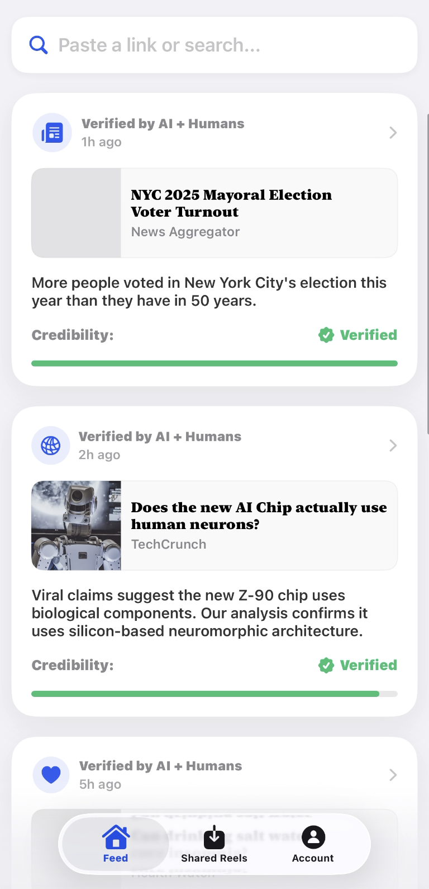

Verified by AI + Humans
The ultimate companion for your social feed. We analyze reels, news, and viral claims in real-time, giving you a credibility score you can trust.
Paste a link or search...
Verified by AI + Humans
1h ago

NYC 2025 Mayoral Election Voter Turnout
News Aggregator
More people voted in New York City's election this year than they have in 50 years.
Credibility:
Verified
Verified by AI + Humans
2h ago
Does the new AI Chip actually use human...
TechCrunch
Credibility:
Verified
×